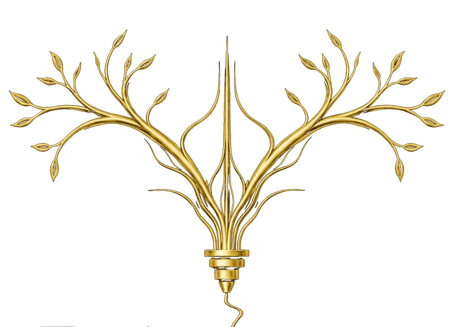

A marca
Toda árvore começa embaixo da terra, muito antes da primeira folha.
A Radix nasceu de uma vontade antiga: criar raiz.
Foram quase vinte anos na área comercial. Vendi de tudo, de tecnologia a roupa esportiva, de consultorias a projetos de estrutura, sempre com a mão na massa. Dediquei boa parte da vida a fazer outras empresas crescerem. Chegou a hora de construir algo meu: algo que faça sentido, que faça parte de mim e que não fique só na memória.
Em todos esses anos, sempre me apresentei como alguém que resolve problemas. E um problema eu vi de perto, muitas e muitas vezes: o atendimento. É ali, num momento sensível e muitas vezes delicado, que o cliente decide se fica ou se vai embora. E é ali que tanta empresa falha, às vezes por muito pouco.
A Radix existe para esse pouco. Uma peça feita para o seu cliente não é só um brinde nem só um mimo. É um gesto. É o jeito de dizer, sem precisar de palavras, que você se importa com quem escolheu você.
Abrace o seu cliente. Deixe que ele se sinta abraçado.
PedroFundador da Radix Ateliê
O que a logo conta
O nome
Radix quer dizer raiz, em latim. É de onde tudo nasce e o que mantém tudo de pé, mesmo quando ninguém vê. Ateliê porque aqui nada sai de uma linha de produção: cada peça é pensada, desenhada e feita para alguém.
O símbolo
O desenho une duas formas que geram vida: a árvore e a anatomia feminina. As duas se ramificam do mesmo jeito, e não por acaso: no colo do útero existe uma estrutura que a medicina chama de arbor vitae, "árvore da vida" em latim.
O caminho de cada peça
Na logo, a copa cresce, as fibras se unem e passam pelo bico de uma impressora 3D. O fio que sai dele escreve o nome, e o nome cria raízes. É o caminho de tudo o que fazemos: uma ideia que ganha forma, vira matéria e permanece.

Vamos criar a sua peça
Conte o que você precisa. Respondemos com ideias, cores e orçamento.
- [NÚMERO A DEFINIR]
- @radix.atelie
- Ateliê
- Florianópolis, SC. Enviamos para todo o Brasil.